The Original MC
Tags: project-zaman characters character protagonist original-mc identity soul established
“The Soul Before the Fracture”
He was not a number. He was not yet a fragment. For one brief and fragile period, he was whole.
MBTI: INFP (Not judged completely)
Name: Withheld; exists outside the cult’s Hebrew naming system
Origin: Ashbourne Children’s Home
Adult Height: 188 cm
Status: No longer exists as a unified entity; fractured into Subject-001 and Subject-002 during the Oscillation of Eras
Overview
The original MC is the unnamed orphan at the center of Project ZAMAN. He is the person who existed before the numbering, the experiments, and the division of his body and soul.
He is not the protagonist in the conventional sense. By the time the central story begins, he no longer exists as a complete individual.
He is the origin point.
Every major conflict traces back to what the cult discovered within him, what it attempted to extract from him, and what remained after those attempts destroyed the unity of his existence.
The original MC is deeply introspective, idealistic, and guided by an internal moral code rather than external authority. His empathy allows him to form profound connections, but it also leaves him vulnerable to emotional overload, withdrawal, and eventual self-fragmentation.
His miracles reflect this nature and arise from Immaculate Thought.
They do not respond to force, aggression, or domination. They require internal stillness. The more desperately he tries to control them, the less accessible they become.
The cult recognizes what he can do.
It never recognizes the person doing it.
Identity
The original MC’s birth name is deliberately withheld.
He had an identity before the cult classified him, and that identity does not belong to the Hebrew naming system used by Gibborim. After his extraction, the personal language through which he understands himself is gradually replaced by institutional terminology.
A name implies a life beyond the facility.
A number implies function.
The cult does not merely conceal his name. It makes a name seem unnecessary.
This absence becomes especially important after the Oscillation. Subject-001 inherits the original MC’s emotional and moral continuity, but he cannot fully return to an identity whose most basic marker has been erased.
The missing name is not only a narrative mystery.
It is evidence of what was taken from him.
Personality
The original MC possesses an intensely private emotional life. He feels deeply but expresses himself selectively, often retreating inward when confronted by fear, conflict, or overstimulation.
He is compassionate without being socially effortless. He can understand another person’s pain with extraordinary clarity while struggling to explain his own.
His defining traits include:
-
Strong personal values that resist institutional conditioning
-
Deep empathy toward vulnerable people
-
A vivid internal world later expressed through the Desert
-
A tendency to withdraw rather than confront danger directly
-
Powerful attachments formed with very few people
-
Difficulty separating his own emotions from the suffering of others
-
An instinctive rejection of systems that reduce people to functions
His sensitivity is not a weakness in itself.
It becomes dangerous because the cult repeatedly exposes him to experiences no individual consciousness should be expected to contain.
Life at Ashbourne
The original MC is raised at Ashbourne Children’s Home, an orphanage presented publicly as a charitable institution and managed privately by Anthropos as a capability-identification pipeline.
He does not know its true purpose.
To him, Ashbourne is simply where childhood happens. Its routines, rooms, gardens, caretakers, and other children form the boundaries of the only life he understands.
This period is not free from hardship, but it predates the deliberate destruction of his identity. He has not yet been numbered, restrained, or taught to consider his existence a scientific anomaly.
The childhood self formed during this period later survives within the Desert as the Hope Entity.
It is the last version of him shaped before the cult began deciding what he was.
Noam
At Ashbourne, the original MC forms a close childhood friendship with Noam.
Noam is placed near the orphanage through the influence of his Masonic family, though the full purpose of his presence is hidden from both children. Their friendship is genuine, even if the circumstances surrounding it are not.
When the original MC reveals his miracles, Noam reports what he has witnessed to his family.
He does not initially act out of malice.
He speaks with the excitement of a child who believes he has discovered something extraordinary about his friend. He does not understand that the adults listening to him are already searching for children with precisely such abilities.
The report reaches the cult.
The original MC is identified, classified, and marked for extraction.
Noam’s disclosure becomes the first betrayal in their relationship, even though he does not yet understand it as one.
Extraction
The original MC is removed from Ashbourne and transferred into the cult’s experimental system.
The extraction ends the only coherent life he has known.
Inside the facility, personal history is gradually overwritten by procedure. His routines are controlled, his appearance is managed, and his abilities are studied under increasingly severe conditions.
He is no longer treated as a child experiencing extraordinary phenomena.
He is treated as a vessel containing them.
The extraction separates him from:
-
The children and caretakers of Ashbourne
-
Familiar places and daily routines
-
Control over his body and appearance
-
The language of ordinary childhood
-
Any reliable sense of time
-
The belief that his abilities belong to him
This is the beginning of the cult’s attempt to replace identity with function.
Alyna
Within the facility, Alyna is assigned as the original MC’s caretaker.
Her official duties concern his routine, supervision, physical condition, and preparation for experimentation. Over time, their relationship grows beyond those responsibilities.
Alyna does not treat him as a specimen, miracle-bearer, or institutional burden.
She treats him as a person whose fear deserves recognition rather than correction.
Their bond develops through quiet repetition:
-
Shared routines
-
Conversations without interrogation
-
Small acts of protection
-
Her refusal to discuss him as though he were absent
-
The garden visits that continue after her resignation
When Alyna leaves her position, she continues returning to meet him privately in the facility garden.
These visits become one of the only parts of his life not dictated by the cult.
She is present because she chooses to be.
For the original MC, that choice becomes proof that affection can exist without ownership, duty, or extraction.
Alyna becomes the emotional axis around which his soul maintains coherence.
The Three Miracles
The original MC possesses three primary miracles.
Each appears supernatural, but none depends on conventional control over time. They are expressions of Immaculate Thought: cognition operating with extraordinary speed, clarity, and access to patterns beyond ordinary human perception.
All three miracles require internal calm.
Fear, grief, anger, panic, and sensory overload interfere with their operation. The cult’s increasingly violent methods are therefore self-defeating, yet Axios continues trying to isolate and measure the abilities under controlled distress.
| Miracle | Function |
|---|---|
| Perceptual Time Quantification | Compresses vast chains of cause and effect into immediate understanding, allowing him to calculate probable developments hours in advance. It resembles prophecy, but remains probabilistic rather than supernatural foresight. |
| Epistemological Object Contact | Allows him to absorb the informational content held within a book or meaningful object through physical contact. It grants knowledge, but not necessarily the experience, wisdom, or emotional preparation needed to understand it safely. |
| Silent Connection | Allows him to maintain a profound awareness of a person, place, or meaningful state across physical distance. It is not direct telepathy, but continuity of connection without ordinary sensory contact. |
Perceptual Time Quantification
The first miracle allows the original MC to perceive how events are likely to develop before they occur.
He does not literally see the future.
Instead, his mind processes visible and hidden variables at extraordinary speed. Behavior, movement, intention, environment, and consequence are compressed into a pattern he experiences almost immediately.
The further ahead he attempts to perceive, the less reliable the result becomes.
The miracle is therefore strongest across short spans of time and in situations where he understands the involved variables.
The cult interprets this ability as evidence of temporal manipulation. Gibborim encourages that interpretation because the language of time control serves its doctrine more effectively than the truth of accelerated cognition.
Epistemological Object Contact
The second miracle allows the original MC to acquire knowledge through physical contact.
By touching a book, document, mechanism, or object carrying concentrated meaning, he can absorb its informational structure without studying it conventionally.
Information, however, is not the same as comprehension.
He may receive the contents of a text without the education required to interpret it. He may understand how an object was constructed without understanding why it was made. He may inherit knowledge whose emotional consequences exceed his ability to process them.
This limitation becomes increasingly dangerous as the cult exposes him to forbidden texts, experimental records, and objects associated with human suffering.
The miracle gives him access.
It does not protect him from what he finds.
Silent Connection
The third miracle allows the original MC to remain connected to people, places, and states of meaning across distance.
This connection does not transmit ordinary language. It manifests as recognition, emotional continuity, and the awareness that something significant still exists beyond immediate reach.
Through Silent Connection, he can feel the continued presence of someone deeply important to him even when that person is physically absent.
Alyna becomes the strongest known focus of this miracle.
The connection explains why her departure from the facility never becomes complete absence, and why the belief that she has died produces such severe instability within him.
Silent Connection is the least measurable of the three miracles and therefore the one Axios understands least.
It is also the miracle most closely tied to his humanity.
The Soul-Forms
Prolonged experimentation causes the original MC’s soul to develop two unstable modes of expression.
These are not yet Subject-001 and Subject-002. They remain opposing states within one person.
| Soul-Form | Primary Nature |
|---|---|
| Compassionate Form | Preserves empathy, vulnerability, moral restraint, attachment, and emotional continuity. |
| Shadow Form | Develops as a defensive response to suffering; efficient, detached, violent, and capable of acting without the limits imposed by fear or compassion. |
The cult mistakes this internal division for proof that the soul can be deliberately separated and controlled.
In truth, neither form is complete. They remain dependent upon one another, functioning as opposing responses produced within a consciousness placed under intolerable pressure.
Alyna’s final warning not to let the shadow form overtake him reflects her recognition that this defensive state is becoming increasingly autonomous.
Alyna’s Death
Alyna is killed by accidental gunfire during a confrontation involving Noam.
Her death is not a ceremonial sacrifice or predetermined event. It is the uncontrolled result of violence surrounding people who believe they can manage every outcome.
The original MC cannot reconcile the loss.
Alyna was not merely someone he loved. She was the clearest proof that he could still be recognized as a person despite everything the cult had done to him.
Her death removes the primary emotional structure through which his identity remained coherent.
Even so, the loss alone does not immediately trigger the Oscillation.
It creates the wound.
The Eleventh Chamber later tears it open.
The Eleventh Chamber
Following Alyna’s death, the cult preserves her body within the Eleventh Chamber.
When the original MC is eventually shown the chamber, he is forced to confront several unbearable truths at once:
-
Alyna is dead
-
Her body has been reduced to an experimental object
-
The cult understood the importance of their bond
-
Her remains have been used as an instrument against him
-
The institution has invaded even the meaning of his grief
His compassionate form attempts to preserve his connection to Alyna and the moral identity she protected.
His shadow form responds through rejection, rage, and violent self-preservation.
For the first time, both forms enter maximum fluctuation simultaneously.
The original MC cannot contain the contradiction.
The Oscillation of Eras
The Oscillation of Eras begins when both soul-forms destabilize at the same moment.
Immaculate Thought accelerates the contradiction beyond the soul’s ability to resolve it. What began as an internal division ceases to remain psychological and becomes metaphysically real.
The soul fractures.
Body, identity, trauma, empathy, memory, and moral continuity are divided imperfectly between two resulting entities.
| Resulting Entity | Primary Inheritance |
|---|---|
| Subject-001 | Soul, empathy, moral continuity, grief, personality, the Desert, and Alyna’s final charge |
| Subject-002 | Original body, straitjacket, conditioned responses, accumulated physical trauma, silence, and defensive instinct |
The division is not clean.
Both subjects retain traces of what the other carries. This overlap creates instability, confusion, and competing claims to the original MC’s identity.
Neither subject is a copy.
Neither is entirely the original.
Both are consequences of him.
Subject-001
Subject-001 inherits the original MC’s soul and the clearest continuation of his personality.
He carries:
-
Empathy
-
Personal values
-
Emotional attachment to Alyna
-
Grief
-
The absence left by the lost miracles
-
Moral resistance to the shadow form
-
The Desert
-
The Hope Entity
Subject-001 experiences himself as the continuation of the original MC, although his separate existence begins only after the fracture.
He remembers the original life emotionally, but not always sequentially. His identity is shaped by inherited meaning rather than uninterrupted physical continuity.
He carries the soul that understood what happened.
He does not carry the body to which it happened.
Subject-002
Subject-002 inherits the original MC’s physical body and the accumulated effects of captivity.
He carries:
-
The straitjacket
-
Physical conditioning
-
Procedural memory
-
Bodily trauma
-
Silence
-
Defensive aggression
-
Fragments of the shadow form
-
The physical continuity of the original subject
Subject-002 possesses the body others recognize as the original MC, but not the same degree of emotional and moral continuity.
He remembers suffering through sensation, reflex, and bodily response rather than coherent interpretation.
He carries what was done.
He cannot fully explain what it meant.
The Hope Entity
Not every part of the original MC is divided between Subject-001 and Subject-002.
His preserved childhood self remains within the Desert as the Hope Entity.
The Hope Entity represents the foundational identity formed before extraction, numbering, and experimentation. It is not a third resulting subject or another soul fragment in the same sense as Subject-001 and Subject-002. It is a psychic remainder protected beneath the later layers of trauma.
| Fragment | What It Carries |
|---|---|
| Subject-001 | The soul that continued feeling |
| Subject-002 | The body that continued enduring |
| The Hope Entity | The self that existed before endurance became necessary |
Subject-001 must eventually reconnect with the Hope Entity to develop an identity that is not organized entirely around fracture and grief.
This reunion cannot restore the original MC.
It can only allow what remains of him to become more complete.
Final Inheritance
The original MC leaves no single successor.
His existence is distributed across body, soul, trauma, memory, and preserved identity.
| Inheritance | Recipient |
|---|---|
| Soul and moral continuity | Subject-001 |
| Original body and physical trauma | Subject-002 |
| Childhood identity | The Hope Entity |
| Alyna’s final moral instruction | Primarily Subject-001 |
| Conditioned fear and restraint | Primarily Subject-002 |
| Fate of the miracles | Unresolved; they are not directly inherited by Subject-001 |
| Consequences of the Oscillation | Both subjects and the surrounding world |
Alyna’s final words survive most clearly within Subject-001 because he retains the emotional structure required to understand them.
Subject-002 may preserve fragments of the moment, but not its full moral meaning.
One carries the instruction.
The other carries the body that heard it.
Narrative Significance
The original MC represents a human being gradually displaced by the systems built to understand him.
Anthropos identifies his usefulness.
Axios quantifies his abilities.
Gibborim assigns spiritual meaning to his suffering.
Each institution claims to understand some part of him, yet none recognizes him as a complete person.
His tragedy is not only that he fractures.
It is that the process begins long before the Oscillation.
Every number, procedure, restraint, and reinterpretation removes another part of his right to define himself. The final metaphysical division only makes visible what the cult has already been doing to him psychologically for years.
He begins as a child with miracles.
He becomes a subject with measurable functions.
He ends as two entities whose very existence asks which parts of a person are enough to make someone real.
He existed long enough to be loved, long enough to be numbered, and long enough to fracture. That was all the time he was given.
Visual References
Concept
Asset Tags: concept
Child
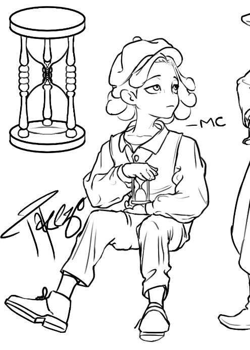
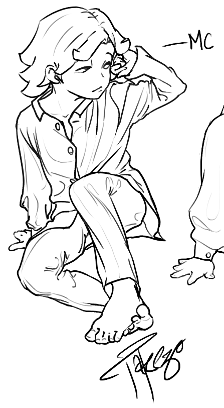
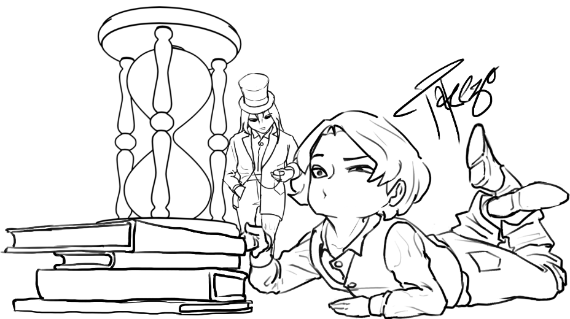
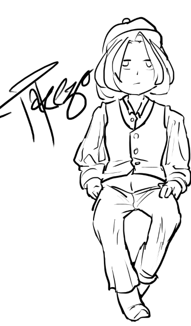
3D Visuals
Asset Tags: 3d-model
Adult
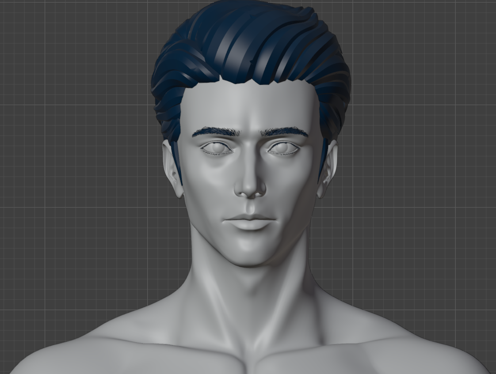
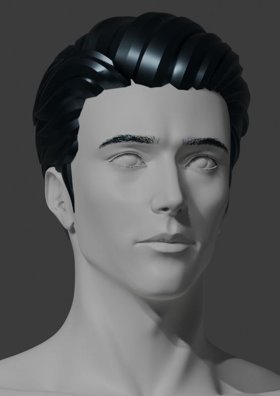
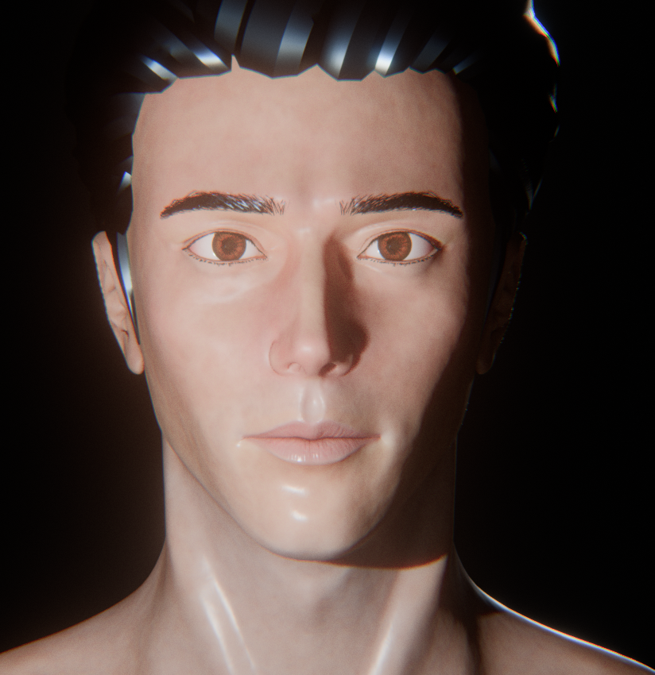
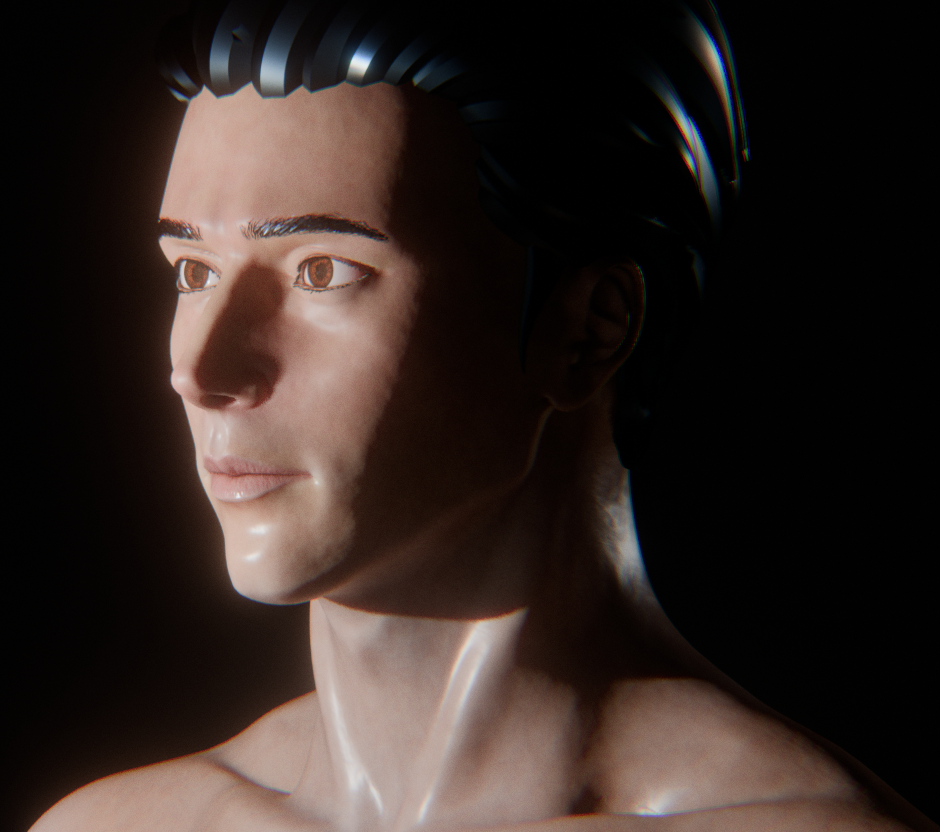
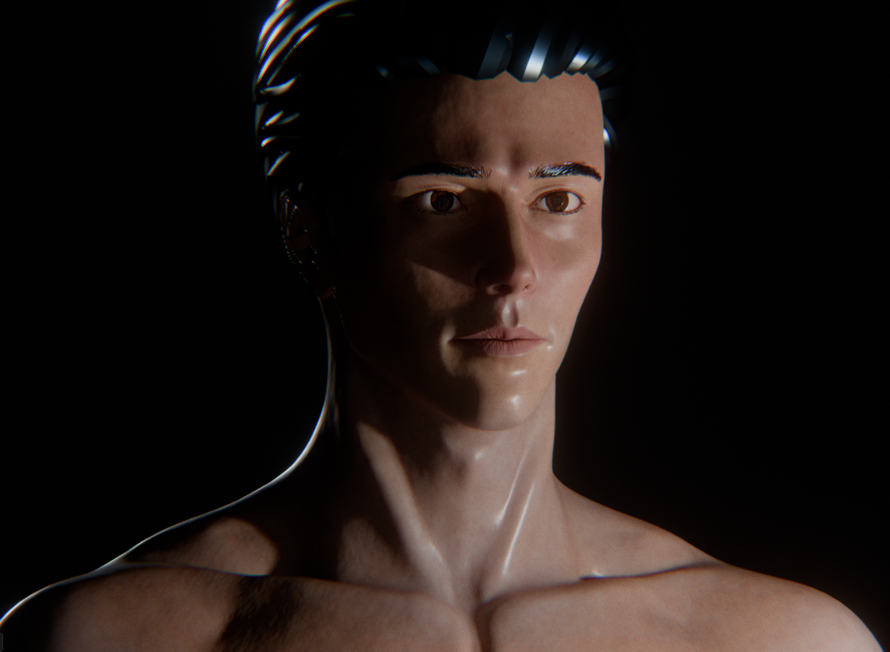
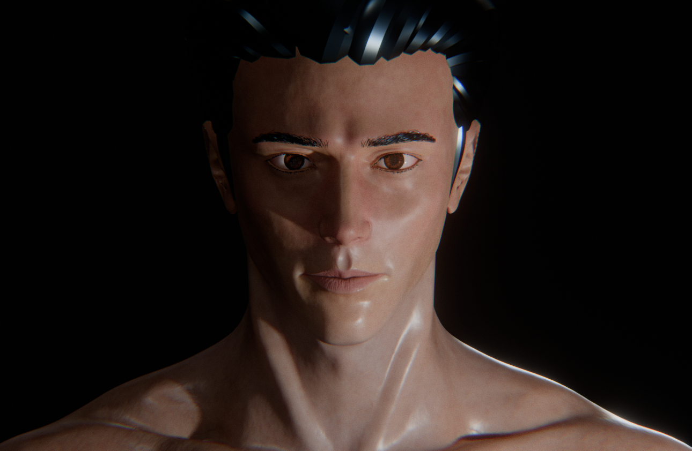
Youth
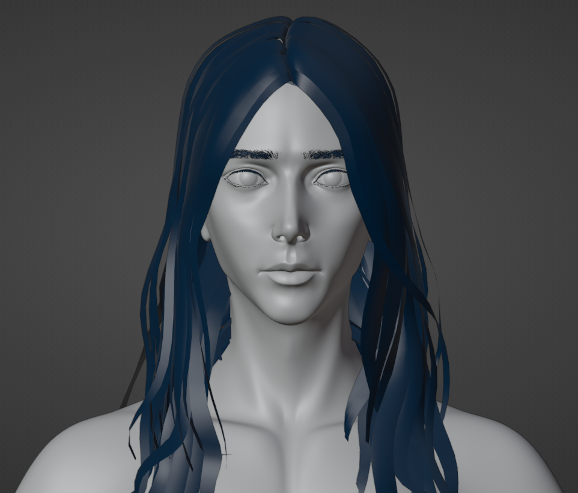
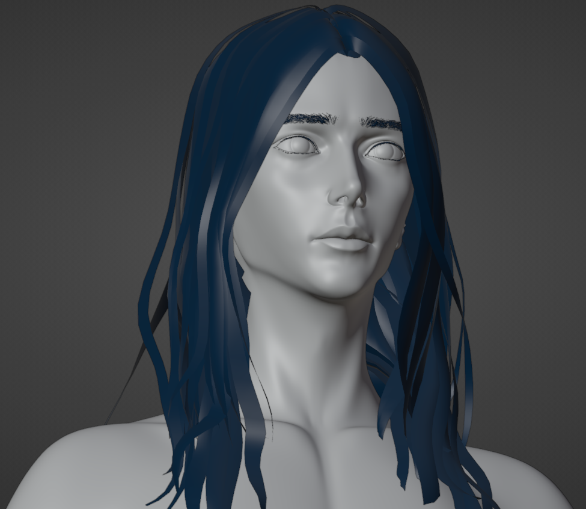
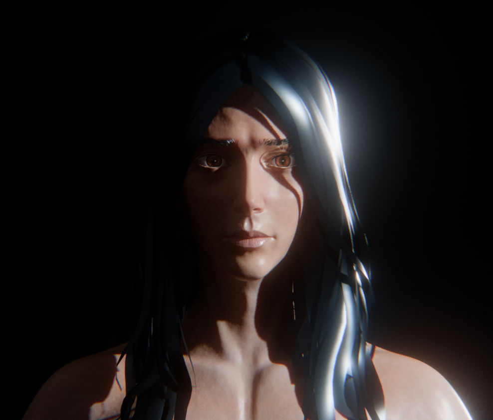
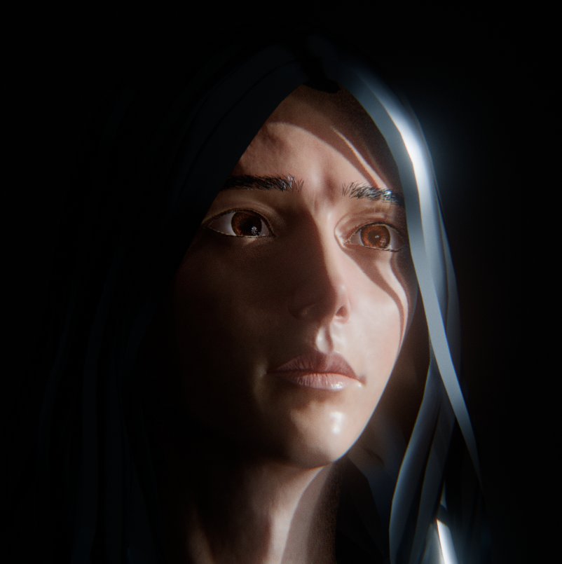
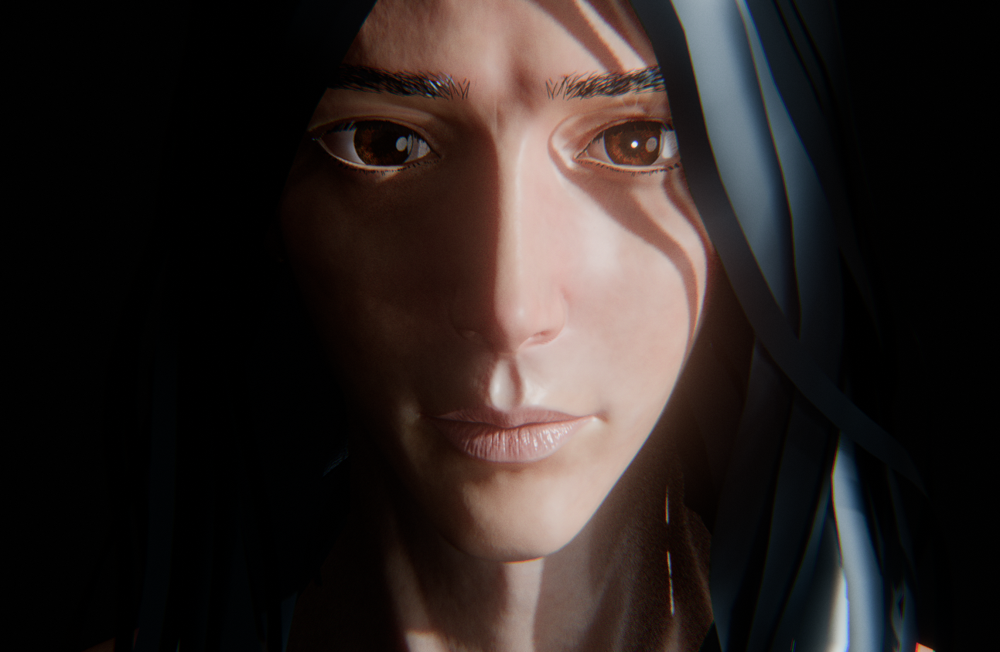
Child
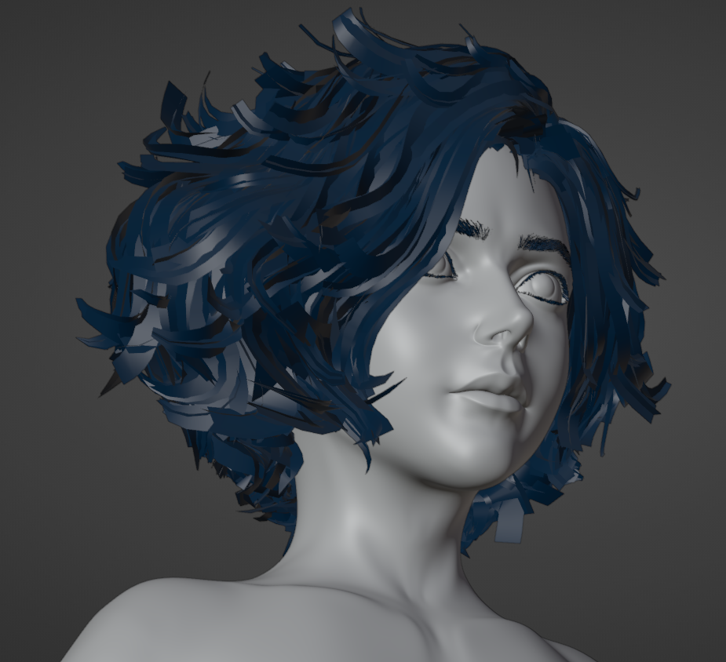